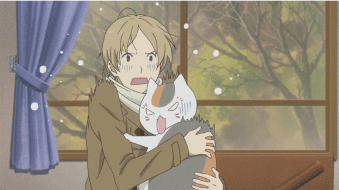
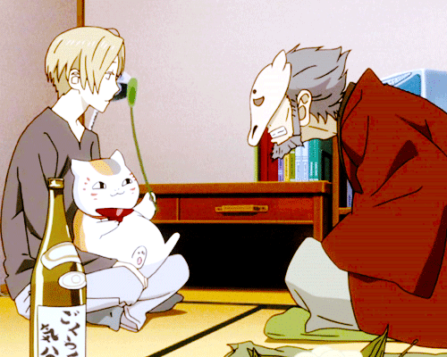
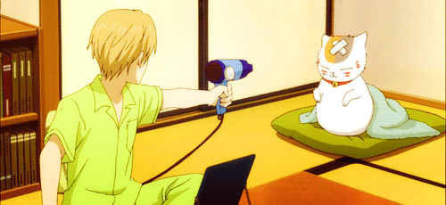
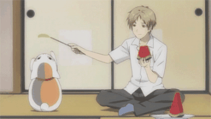

我是在朋友的推荐下点开了夏目友人帐这一部动画，这一点让我无法自拔地掉入了深坑，即使第四季是高三那年更新的，我也一集都没有拉下。夏目特有的情怀就好似每个人都经历过的那样一段模糊又尴尬的青春岁月。家庭的烦恼、学业的烦恼、友情甚至爱情的烦恼都在那样一段岁月中生根发芽。有时候看着夏目就好像看到了过去的自己。随着夏目的陪伴，我也逐渐从比夏目小，到跟夏目一样的年龄，看到夏目迎来第五季，还是会回忆起那个朦胧青春里的夏天，那种微妙的无法言语的情感，所以我专门为这部温暖了我一整个青春的动漫————夏目友人帐，做一个专题网页。
刚开始看夏目的时候需要你有耐心来融入这部作品，夏目的故事其实很简单，一个能看见妖怪的少年撕一本永远撕不完的小册子，每一个名字，每一个妖怪，都有一段故事，最后交汇在一起的是夏目和他身边的人，也许我已经记不清最让我感动的故事到底讲述了什么，但是我始终会记得夏目，一个因为能看见妖怪，而在常人眼中略显古怪的少年，还有口口声声想要友人帐，但其实比谁都关心夏目的喵咪老师。夏目说过：因为被温柔对待过，所以也想温柔待人。一个人，对他人温柔体贴，是不难的，但是在经历过伤害后仍然保持这最本真的善良，却是异常难能可贵的，而这些都是夏目独有的特质。这次做的这个网页向大家推荐我最喜欢的夏目友人帐，希望可以为大家带来温暖和感动。
|  |  |  |  |